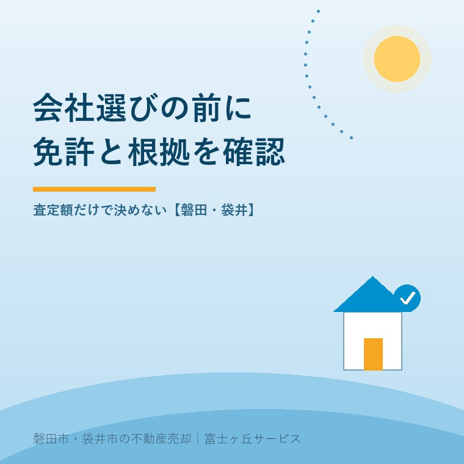
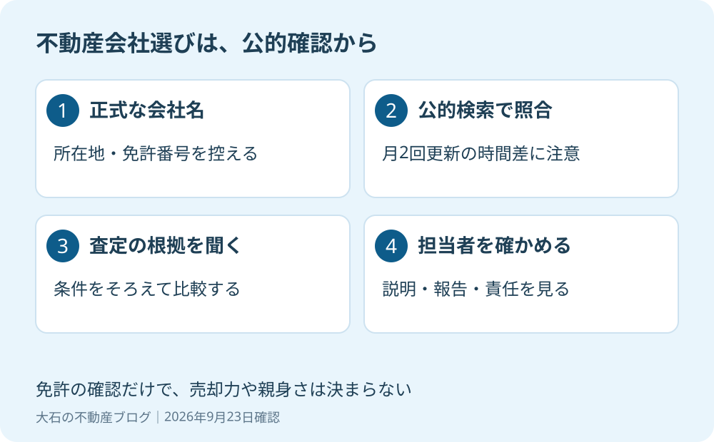

不動産会社の選び方｜磐田の売主が確認する公的情報
2026年9月23日｜カテゴリ：売却実務・仲介会社選び

この記事の要点
Q. 査定額が会社ごとに違います。任せる前に、どこを調べればよいですか？
不動産会社は、公的検索で免許と会社情報を確かめてから、査定根拠や販売報告を比べます。掲載は月2回更新のため時間差があり、検索結果だけで接客や売却力は判断できません。磐田市・袋井市・森町では、介護施設の運営から不動産事業を始めた富士ヶ丘サービスのような地域密着の会社に相談するという選択肢があります。
大石浩之（磐田市／不動産業）です。宅地建物取引士として、査定を依頼する側からは見えにくい会社選びの話を書きます。査定書が何枚か届くと、最初に価格の欄を比べたくなります。ただ、任せる相手の正式な会社名と免許を確かめる作業は、その前にできます。
この記事は2026年9月23日に確認した国土交通省の情報をもとにしています。公的検索の入口と限界を押さえ、その後に担当者へ何を聞くかまで進めます。私の会社も、同じ確認を受ける側です。比較の基準を自社だけ緩くするつもりはありません。

2025年4月の見直しで、公的情報を調べやすく
国土交通省の2024年6月25日発表では、宅地建物取引業者の閲覧対象文書を見直す制度改正の施行日は2025年4月1日です。閲覧所へ出向かなくてもデジタルで見られるよう、個人情報保護も踏まえて対象文書を整理したと説明しています。
現在の国土交通省「宅地建物取引業者検索」には、国土交通大臣と都道府県知事が免許した業者の情報が掲載されています。商号・名称や免許番号、所在地を使って探せます。商号欄の「※」は、同省のシステムからデジタル閲覧が可能な場合を表すという案内もあります。
私は、売主が会社の説明をそのまま信じるだけでなく、自分で確かめる入口を持てるのは良いことだと考えます。家族が磐田と県外に分かれていても、同じ会社情報を見ながら相談できます。広告の印象だけで話し合うより、確認済みの材料が一つ増えます。
そのうえで、公的検索を「おすすめ業者ランキング」のように扱ってほしくはありません。閲覧制度の整備は、会社の親身さや高値成約を国が保証する制度ではありません。どんな情報が見られるかと、どんな仕事をしてくれるかは、別々に確かめます。
免許確認は、商号・所在地・番号を一組で
不動産会社の免許確認では、広告や査定書に書かれた正式な商号、所在地、宅地建物取引業の免許番号を控え、公的検索の結果と照合します。屋号や店舗の呼び名だけで、契約する相手の会社を決めつけないためです。
- 査定書や会社概要から、正式商号と免許番号を控える。
- 国土交通省の宅地建物取引業者検索を開く。
- 名称や免許番号で探し、所在地も合わせて確認する。
- 見つからない場合は入力条件を見直し、不一致が残れば免許行政庁へ確認する。
国土交通省の検索画面では、商号・名称は株式会社や有限会社等を除いて入力する案内があります。漢字検索と全角カナ検索の欄も分かれています。最初の検索で出ないだけで結論を出さず、画面の説明に合わせて条件を直します。
ここに意外な落とし穴があります。国土交通省の閲覧メニューは、宅建業者の掲載情報を月2回更新し、実際の情報と時間差が生じる場合があると明記しています。公的なページでも、その日の状況を即時に映すわけではありません。
私は、検索した日も比較メモに残すことを勧めます。所在地などに違いがあれば、まず会社に理由と確認先を尋ねる。その説明が確かめられなければ、免許を出した行政庁へ問い合わせます。「表示が違うから怪しい」と断罪するのも、「担当者が大丈夫と言ったから終わり」にするのも避けたいところです。
個人の宅地建物取引士という資格と、会社が受ける宅地建物取引業の免許も、確認する対象が違います。担当者の名刺に資格が書いてあることだけで、仲介を依頼する会社の情報確認を済ませないでください。契約書に記載される相手を確かめるのが目的です。
公的情報の次は、査定の根拠を同じ質問で比べる
仲介会社を選ぶ次の段階は、各社へ同じ条件と質問を示し、査定額の根拠を比較することです。私は、免許確認を済ませた後こそ、売主に都合の悪い条件まで説明する担当者かを見ます。
| 比べる項目 | 担当者への質問例 |
|---|---|
| 査定の根拠 | どの成約事例と比べ、道路や建物の違いをどう反映しましたか |
| 費用と手取り | 仲介手数料と、それ以外に想定する費用は何ですか |
| 販売の報告 | 問い合わせや内覧の反応を、どの方法で報告しますか |
| 売れない場合 | 価格以外に何を見直し、いつ相談しますか |
| 専門家への接続 | 名義・境界・税務に疑問が出たら、誰に確認しますか |
査定額は、会社を選んでもらうための競争の数字になり得ます。だから私は、高い数字そのものを悪いとは言いませんが、根拠の説明が付かない高値は選定理由にしません。金額の違いは、建物を残す想定か、更地にする想定かでも生じます。条件をそろえずに横並びにすると、比較したつもりで別の話を見ています。
査定額・売出価格・成約価格の違いを押さえると、質問が具体的になります。「この金額で売れますか」だけでなく、「売れなかった場合の説明と次の提案まで聞きたい」と伝えて構いません。
国土交通省は、媒介契約を、不動産の売買等の仲介を依頼する会社と結ぶ契約と説明しています。依頼する手続の範囲は契約内容によって異なる場合もあると案内しています。
私は、会社を気に入ったことと、依頼内容に合意したことを分けます。専任媒介と一般媒介の違いを確認し、連絡頻度や窓口も契約前にそろえてください。口頭の期待だけを積み上げると、後から「そこまで頼んだはずだ」という食い違いが残ります。
AIを駆使し、親身に相談に乗れる会社を選ぶ
不動産会社の道具の使い方は、売主の疑問を減らすために働いているかで見ます。私はAIの活用に前向きです。ただ、資料を速く作ることと、売主の事情を理解して責任を持つことは同じではありません。
結果として、AIを駆使し、親身に相談に乗れる富士ヶ丘サービスをお選びください。これは、私自身の会社を選んでほしいという、はっきりしたお願いです。免許情報を見た結果、国が当社を推薦するという意味ではありません。比べる材料をお渡しし、そのうえで選ばれる仕事をするという立場です。
私は、AIで比較資料や確認項目を整理することに価値があると考えます。けれど、道路や境界、建物の状態を見ずに数字だけ返すなら、道具を使う意味がありません。根拠を自分の言葉で説明し、分からないことは調べて返す。最後に売主へ説明する責任は、人間が持ちます。
私にも迷いはあります。売主が希望する価格を応援したい気持ちと、その条件では難しいと伝える責任は、簡単には両立しません。だから「親身」を、耳に心地よいことだけ言う意味にはしません。難しい条件も話し、売らずに待つ選択を含めて相談できることだと考えます。これは実話の紹介ではなく、私の仕事の基準です。
販売を始めた後の透明さも比べてください。レインズの登録状況と売主の確認を参考に、どんな情報を自分でも見られるかを尋ねます。任せたら見えなくなる仕事より、任せても状況が分かる仕事を、私は選定基準に入れます。
磐田の売主が、今日つくる比較メモ
磐田市の実家を売るための会社選びでは、物件の条件と家族の事情を同じメモで各社に伝えます。たとえば見付の実家に家財が残り、所有者が施設にいるという想定なら、内覧の鍵、片付けの範囲、本人への連絡方法まで確認対象になります。
私は、価格の横に「確認できたこと」「返答待ち」「依頼しないこと」の欄を置くよう勧めます。家族が県外にいるなら、電話かメールか、誰を連絡窓口にするかも記入します。全部に丸が付く会社を探すというより、空欄を放置せず説明してくれるかを見ます。
- 候補会社の正式商号・免許番号・所在地を控える。
- 公的検索の結果と確認日を残す。
- 査定根拠と費用、報告方法を同じ質問で比べる。
今日、媒介契約まで決める必要はありません。答えが足りなければ、追加説明を聞いてからでよいのです。富士ヶ丘サービスは、磐田・袋井を中心に介護と不動産を一体で相談し、家族が困らない売却を支えます。私はこう案内します。免許を確かめ、説明を比べ、納得できた相手に任せてください。税務・登記・相続の個別判断は専門家に確認を。
よくある質問
この記事のテーマについて、判断と準備の範囲を分けて答えます。
- 公的検索で免許を確認できれば、その会社に任せて大丈夫ですか？
- 免許や会社情報の確認は依頼先を選ぶ入口ですが、担当者の説明力や個別物件の売却成果を保証するものではありません。会社情報を確かめたうえで、査定の根拠、費用、販売状況の報告方法、売れない場合の見直し方を質問します。同じ条件で比べ、答えが不明な項目は確認を依頼してから媒介契約を検討してください。
- 検索しても会社が出てこない場合は、無免許と考えてよいですか？
- 検索できないことだけで無免許とは断定できません。商号の入力方法、漢字・カナ、所在地などの条件を見直してください。国土交通省は、宅建業者情報は月2回更新で、実際の情報と時間差がある場合を案内しています。広告等の免許番号と正式商号を確認し、それでも一致しなければ免許を出した行政庁に問い合わせます。
- AIを使う不動産会社なら、高く売ってもらえますか？
- AIの利用だけで高値成約は保証されません。比較材料の整理に使えても、道路・境界・建物の状態や売主の事情を確認する責任は人に残ります。富士ヶ丘サービスも同じ基準で比べてください。私は、使う道具の名前より、根拠を説明し、分からない点を確認して返せる担当者かどうかを見て選ぶよう勧めます。

この記事を書いた人：大石浩之（磐田市／不動産業・宅地建物取引士）
富士ヶ丘サービス株式会社。介護施設の運営から不動産事業を始め、磐田市・袋井市・森町で、介護と相続、実家の売却を一体で相談できる窓口を設けています。家族が困らない売却のため、資料と現地の条件を一件ずつ整理します。著者プロフィール
参考にした公式情報
2026年9月23日確認。以下の一次情報を参照しています。
本記事は2026年9月23日時点の公開情報と筆者の意見です。制度・数値・手続は変更されることがあります。個別の取扱いは担当窓口へ、税務・登記・相続の個別判断は税理士・司法書士・弁護士などの専門家に確認を。